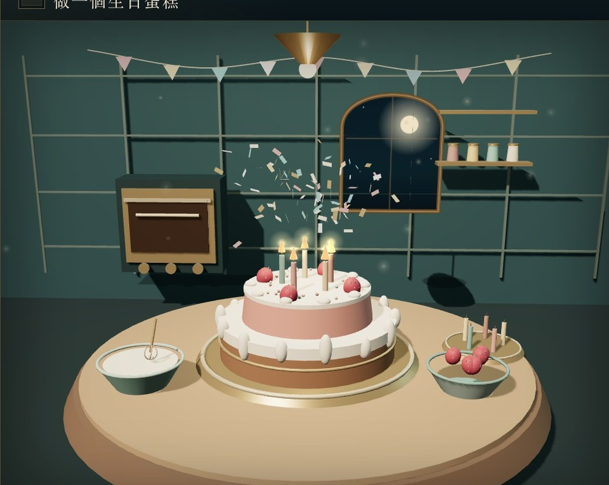
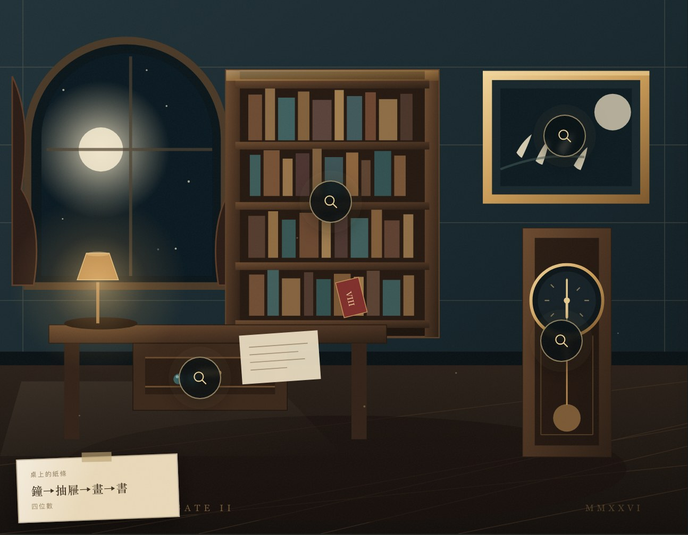
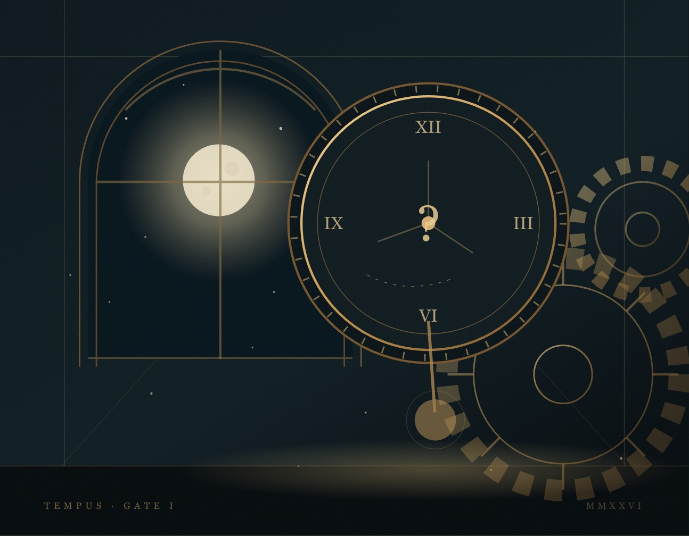
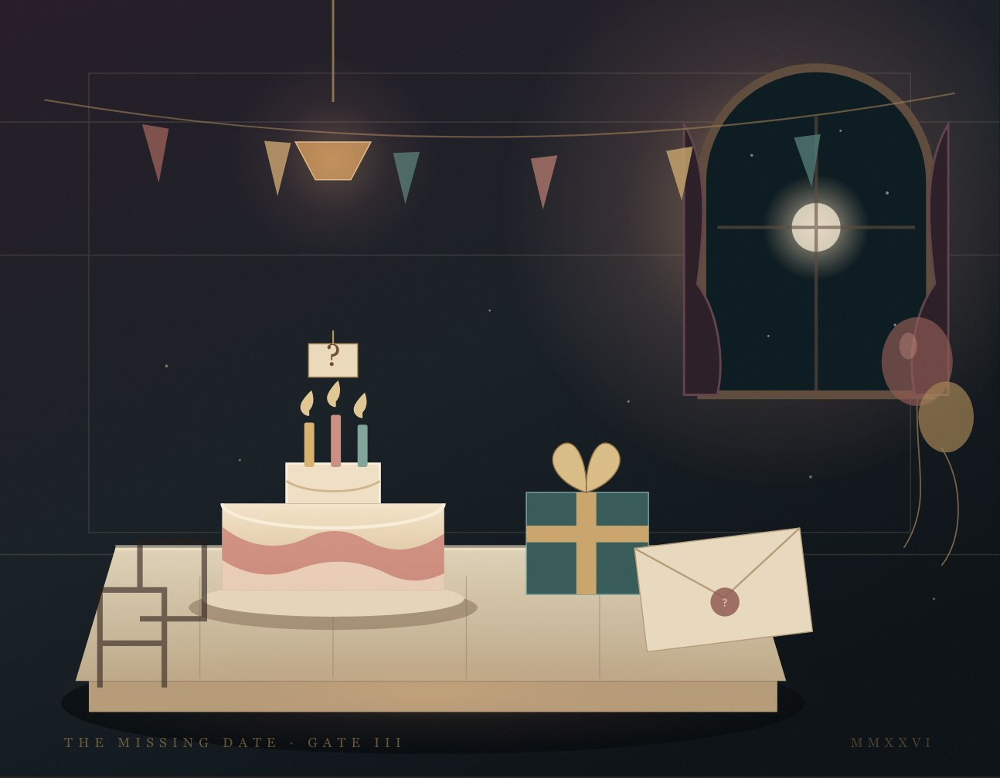

三種思考
數學、觀察，與一道不靠猜的生日謎題。
三關沉浸式解謎 · 網頁即玩
三道門，三種謎。
答對，門才會開。
一場約五到十分鐘的瀏覽器解謎體驗：走進停擺的鐘樓、上鎖的書房，最後在 Three.js 即時烘焙的生日廚房裡，親手完成第三道門。

III THREE.JS · WEBGL
體驗
《三關謎城》把三道界線分明的關卡，串成一個完整的儀式。每一道門都有自己的聲音、光線與節奏；答錯不會前進，答對才會聽見門鎖轉動。
不需要註冊、不需要下載。只要一個瀏覽器、一點好奇心，和一扇在你答對之前不會打開的門。
「答案會遲到，但好奇心不會。」
數學、觀察，與一道不靠猜的生日謎題。
在 Three.js 廚房裡攪拌、烘焙、裝飾一個生日蛋糕。
謎題數值、密碼、線索順序、日期與食譜都會重新生成。
三道關卡
每一幕都需要不同的注意力。三道門都開了，這場夜遊才算完成。

I MATHEMATICSCHAPTER II / ESCAPE ROOM
你在一間上鎖的書房醒來。調查書架、畫作、掛鐘與抽屜，讀懂紙條上的順序，拼出四位數密碼。每局的線索、數字與順序都會改變。

III BIRTHDAY · 3D 3D 壓軸CHAPTER III / BIRTHDAY + 3D
邀請函沒有日期，只有乘積與加總。找出唯一的一天，再走進 Three.js 廚房，攪拌、烘焙、裝飾一個真正的生日蛋糕。
3D 壓軸
日期只是入場券。走進即時 3D 廚房後，你要攪拌麵糊、把蛋糕送進烤箱，再照著食譜放上草莓和蠟燭。食譜會跟著當局生日改變。
細節
數學數值、密室密碼與紙條順序、生日日期與蛋糕食譜，全部重新生成。
每關兩段提示。它們給方向，不替你開門。
計時、錯誤次數與提示用量；最佳紀錄留在你的瀏覽器。
單手可玩的版面；3D 廚房的每個動作都有按鈕備援。
整個商業網站與遊戲都提供繁體中文與英文版本。
鍵盤操作、清晰焦點、螢幕閱讀器標籤與減少動態效果，都是設計的一部分。
怎麼玩
不需要安裝，也不需要帳號。整個體驗只需幾秒就能開始，並在結束後留下一點餘韻。
以繁體中文或英文開啟網站，選擇會跟著你進入遊戲。
數學、密室、生日謎題。答錯，門鎖不會動。
攪拌、烘焙、裝飾蛋糕，然後取得用時、稱號與可複製的成績。
適合誰玩
常見問題
關於這場體驗、使用的技術，以及你的資料，都在這裡。
不需要。整個體驗在現代瀏覽器中運行，免費遊玩；沒有帳號、下載或付款。
第一次玩約五到十分鐘。謎題會重新生成，所以第二次會是另一個夜晚。
可以。版面、輸入與 3D 場景都為手機設計。3D 廚房需要 WebGL；若裝置不支援，每個煮食步驟仍有按鈕備援。
不。數學數值、密室線索與順序、生日日期與蛋糕食譜，都會依每一局重新生成。
有。商業網站與遊戲都提供繁體中文與英文；可在任何一頁的右上角切換語言。
沒有帳號、廣告或第三方追蹤。語言選擇與最佳紀錄只存在瀏覽器的本機儲存空間。
原生 HTML、CSS、JavaScript、原創 SVG 場景、Three.js r149 廚房，沒有外部圖片、字型或音訊依賴。